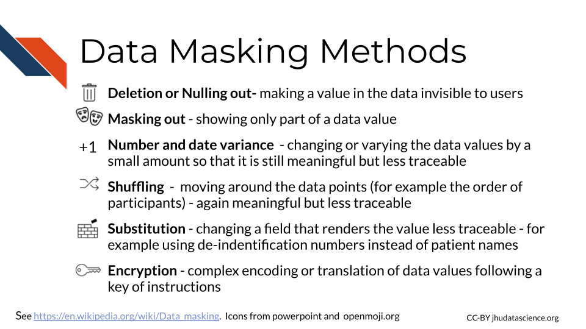

Chapter 8 Data Security
In this chapter we will discuss best practices for keeping your data safe and secure.

Data security involves protecting your data from human error, as well as from cybercriminals. Precious data needs to be protected from being corrupted (rendered unusable), being deleted, being misused, and being leaked to the public when the data is sensitive or private (as is the case with much of our clinical data)(IBM_data_security?).
8.1 Data Security Strategies
There a several major strategies to achieve data security. We will cover the following 4 major categories, in part according to (IBM_data_security?).
 Restricted access - minimizing access to only authorized users, 2) Data masking - removing/obscuring/changing values a) De-identification -concealing data that can be used to identify patients b) Data encryption - translating the data mathematically 3) Data erasure - fully deleting all traces of data from shared spaces, 4) Data resiliency - maintaining backups of the data and recovery strategies")
8.2 Data access
8.2.1 Authentication
Authentication is the process of verifying identification. This goes both ways when a user attempts to use a server. Servers will check that a user (client) is who they claim to be and that they are authorized to access the information on the server. The user’s computer (client) will also check that the server is what it claims to be. Typically users will use a user name and password for the server to confirm identity, however your computer often checks a certificate from the server to confirm it’s identity (authentication?).
8.2.3 Permissions
If you use the command line, you may have noticed that files are sometimes listed with letters like so:

These letters indicate the users ability to perform tasks for each file called file system permissions.
In unix or unix-like systems, there are three types of users:
- Owner (sometimes called user) - This is the person that created the file by default
- Group users - groups can be created to more easily give the correct permissions for various files for a similar group of users.
- Other users - This is any other user who might come into access with the file
There are generally 3 types of permissions:
- read (r) - the user can read the contents of the file, or the user can just read file names in the case of a directory (or folder)
- write (w) - the user can modify the file, or the user can create or delete files in the case of a directory (or folder)
- execute (x) - the user can execute a file - this allows the operating system to run the file, for example a user could run a script, or the user can search among files in the case of a directory (or folder)

Values for permission follow a standard form:
- The first value indicates information about the file type, if it is a regular file it is often just a
-. This does not indicate any information about permissions. If it is a link to a file located somewhere else it is indicated with anl. - The next 3 values indicate what the owner of the file can do. They are always listed in the order of read, write, and execute permissions.
- The next three values indicate what the group members can do (again with the order listed above).
- the final three values indicate what other users can do (again with the order listed above) (file-system_2021?).
Sometimes you will see an @ or + symbol at the end, which indicates that there are additional attributes about the file that you can use a command like ls-al@ filename to get the information, or additional security information about the file, which you can obtain using a command like ls -le filename or getfacl filename. The command that you should use depends on your operating system.
In the above image we see -rwxr-xr-x for one of the files.
The - at the beginning indicates that the file is a regular file, the next 3 values of rwx indicate that the owner has read, write, and execute permissions, the r-x indicates that the group has read and execute permissions but not write, and the last r-x indicate that the other users also have only read and execute permissions.
There are commands to modify file permissions. If you are using a Unix-like system, you can modify permissions with the chmod command, which stands for “change mode” (chmod?).
8.2.3.1 The principal of least privilege
The principal of least privilege (PoLP) also called the principal of least authority specifies that users should only have access to the data or resources necessary to complete a task.
If someone does not need access to perform work, they should not be given access. Furthermore, if someone is given access to perform a task and they complete that task, access should then be removed from that person. Additionally, if someone only needs to read a file, then they do not need access to modify the file. In this case a user can have read permissions but not write permissions. Ultimately this type of management leads to the least number of users having access to read or alter protected or sensitive data at a given time (CISA_Least_Privilege?; Wikipedia_principle?).
As an example of this in practice: If a postdoc is working on a project with sensitive data, and the PI does not need to see the raw data to collaborate on the project, then the PI should not have access to the data.
8.2.4 WiFi
8.2.5 Passwords
8.2.6 Stale access
8.2.7 Flash drives.. not sure where to put this…
8.3 Data masking
Encryption is actually just one of the more complex methods of a larger concept called data masking for protecting sensitive data. There are other methods for obscuring parts of the data besides the complexity of encryption, such as the following:

8.3.1 De-identification
https://www.hhs.gov/hipaa/for-professionals/privacy/special-topics/de-identification/index.html https://opin.com/de-identify-health-information-phi-v2/ https://en.wikipedia.org/wiki/De-identification #### Safe harbor #### Expert Determination #### Limitations
8.3.2 Encryption
Encryption is one of the most well-known methods for keeping data safe. It is used as a last method in case unauthorized users can access to data, and it is also used to protect data when transferring it.
The process involves encoding or scrambling the data in a nonrandom format (we call this form of the data encrypted) that given the right instructions, a computer can reformat into the original form in a process called decryption. The instructions called the key are kept safe like a password and depending on the type of encryption, it can require quite a lot of computational power to decrypt the data. This protects the data because if a cybercriminal accesses the data or if the data is somehow made public when it shouldn’t be, it will not be easily interpreted (Forcepoint_2018?).
There are different methods for encrypting data. One common method is called asymmetric, which involves two keys, a public key and a private key (IBM_encryption?). This method is also sometimes simply called public key.
Users can get access to the public key to allow them to encrypt the data, while the private key remains private and is used to decrypt the data. This method is also called public-key encryption (IBM_encryption?).
Symmetric cryptography on the other hand uses one key for encryption and decryption. In systems that use this type of encryption, pairs of users will often be given their own key. The advantage of this system is that decryption is a bit faster, the keys are smaller, and it is generally less expensive to implement. If someone gains access to the key, however they can decrypt data or messages, and encrypt data or messages and appear as if they are the person that owns that key. So often the keys themselves are encrypted (IBM_encryption?).
Since symmetric decryption is faster, it is often used for transferring data or for large datasets.Common symmetric algorithms are AES-128, AES-192, and AES-256 (cyware_social_encryption?).
Asymmetric encryption is regarded to be more secure, common algorithms included RSA and DSA, and several PKCS standards (cyware_social_encryption?).
These algorithms involve mathematical operations to encrypt the data. See this video for a simplified explanation and a suggestion for a video series if you want to learn more about how these encryption algorithms work:
8.3.2.1 SSL Socket Layer
This is what the s in https is for. This indicates that data from the server is using a form of encryption and that the website server has a special SSL certificate from a trusted Certificate Authority that verified that the server can be trusted. There is actually a lot happening behind the scenes!
According to (digicert?) this involves the following steps:
A web browser (like chrome) connects to a web server (website) that is secured with SSL (it starts with https instead of http). The browser asks the server to identify itself.
The Server sends a copy of the SSL certificate and the public key.
The browser checks the certificate to make sure that it comes from a trusted certificate authority and that the certificate has not expired or been revoked. The browser also checks that the names on the certificate and the website match. It then sends the server an encrypted session key based on the public key.
The server then decrypts the session key using the private key and sends an encrypted acknowledgment to start an encrypted session.
The server and browser can now transmit encrypted data back and forth.
Note that newer versions of this process are called Transport Layer Security (TLS).
8.3.2.2 SSH Secure Shell
SSH is also a process for securely transmitting files from one computer to another using encryption. However, in this case it can be done using a command line interface instead of a browser. SSH also does not involve certificate.
https://sectigostore.com/blog/ssh-vs-ssl-exploring-the-similarities-and-differences/
8.4 Data erasure
It turns out that when you delete a file (even after emptying the trash), it isn’t as “deleted” as you might think. This is because when a file is deleted, the data for that file actually stays on the storage hardware, and it’s simply the computer’s ability to find the data that is hindered. However, there is software that can help people recover data on storage hardware. This can be a great security issue, as sensitive data can remain on people’s hardware when they get a new computer or stop using particular data on a server.
One method to ensure that the deleted data is really eliminated is to physically destroy the hardware that it was stored on. However, this isn’t always necessary, as there are methods using software. This option is great because the hardware can be reused without allowing future users potential access to your data. As you might imagine, this is the preferred method for erasing data on shared computing resources like servers (Holland_2020?). These methods erase the data by overwriting the data with random digital information (wikipedia_erasure_2021?).